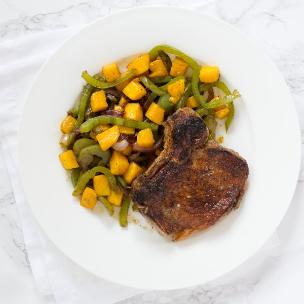

Paprika Pork Chops with Sautéed Bell Pepper, Mango & Red Onion

Prep Time
40 min
Nutrition (per serving)
560.6 kcalCalories
43.2 gProtein
31.4 gCarbs
29.9 gFat
Full nutrition table
| Calories | 560.6 kcal |
| Total fat | 29.9 g |
| Saturated fat | 10.9 g |
| Trans fat | 0.2 g |
| Cholesterol | 116.6 mg |
| Sodium | 118.9 mg |
| Carbohydrates | 31.4 g |
| Fiber | 4.7 g |
| Sugars | 25.7 g |
| Protein | 43.2 g |
| Potassium | 1104.1 mg |
| Calcium | 86.1 mg |
| Iron | 2 mg |
| Vitamin A | 241.4 IU |
| Vitamin C | 111 mg |
| Vitamin D | 52.3 IU |
Cookware
Ingredients
- 2green bell peppers
- 2mangoes
- 4pork chops, bone-in
- 1 mediumred onion
- black pepper
- paprika
- salt
- virgin coconut oil
Steps
- Wash and dry the fresh produce.2 green bell peppers
2 mangoes - Quarter the bell peppers lengthwise; remove and discard the stem, seeds, and membranes. Slice the quarters crosswise into small strips and transfer to a medium bowl.
- Trim off and discard the ends of the onion and remove the outer layer; cut lengthwise into thin wedges. Add to the bowl with the bell peppers.1 medium red onion
- Preheat a skillet over medium-high heat.
- While the skillet heats up, pat the pork chops dry with paper towels and place on a plate; season with paprika, salt, and pepper on both sides.4 pork chops, bone-in
2 tsp paprika
1 tsp salt
½ tsp black pepper - Once the skillet is hot, add coconut oil and swirl to coat the bottom.1 tbsp virgin coconut oil
- Place the pork chops in the skillet and sear until they develop a nice crust, 2 to 3 minutes per side. Then, reduce the heat to medium and cook the chops, flipping occasionally, until they are cooked through (test using a thermometer or cut into a chop with a knife), another 3 to 5 minutes. Once done, transfer the pork to a plate.
- While the pork chops cook, peel the mangoes, then slice off the flesh from the pit, starting with the flatter sides; discard the pit and large dice the flesh (cut into ¾-inch cubes).
- Once the pork chops have been transferred, add more coconut oil to the skillet.1 tbsp virgin coconut oil
- Add the bell peppers and onion to the skillet; season with salt and pepper. Cook, stirring frequently, until the vegetables are just tender, 2 to 3 minutes.½ tsp salt
¼ tsp black pepper - Add the mangoes to the skillet; stir to combine and continue cooking for an additional 1 to 2 minutes. Remove from the heat.
- To serve, divide the pork chops and sauté between plates. Enjoy!